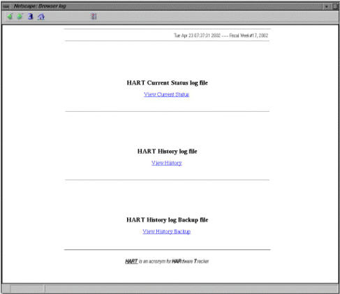

Illustration 1: Starting the HART Viewer

Illustration 1: Starting the HART Viewer
Clicking the HART logs link will open the HART log selection page. See Illustration 2.
Illustration 2: HART Start Page

The three available choices:
HART Current System Log
HART History Log
HART History Log Backup